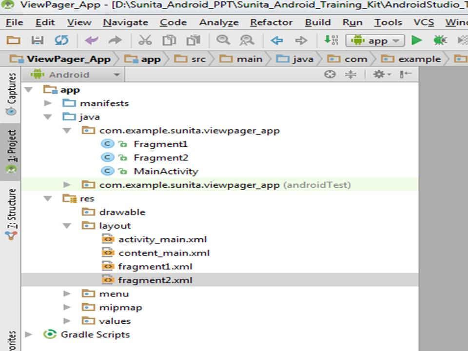
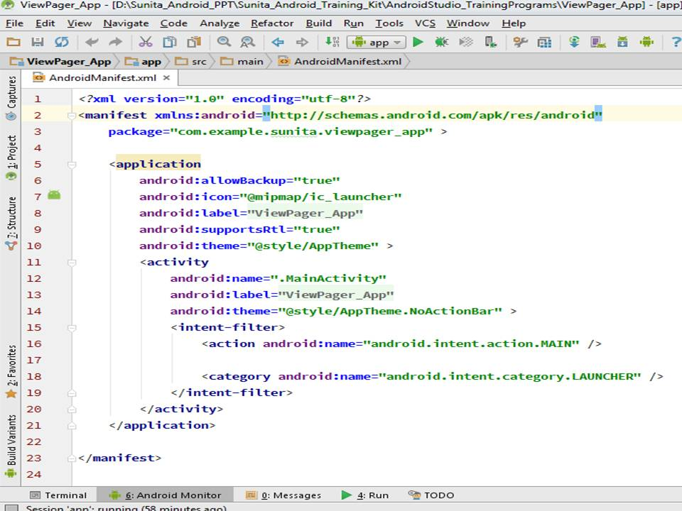
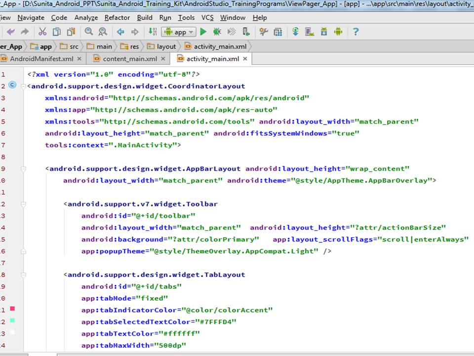
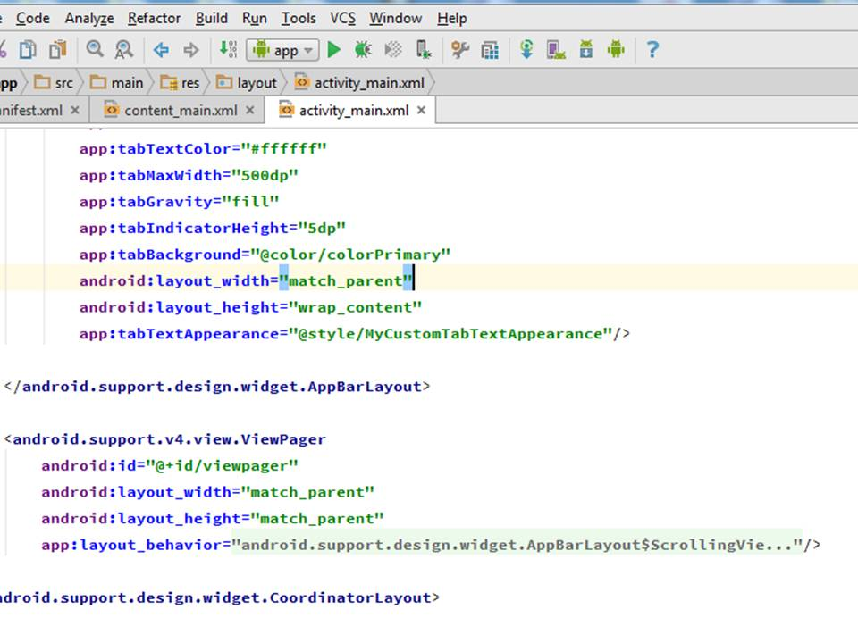
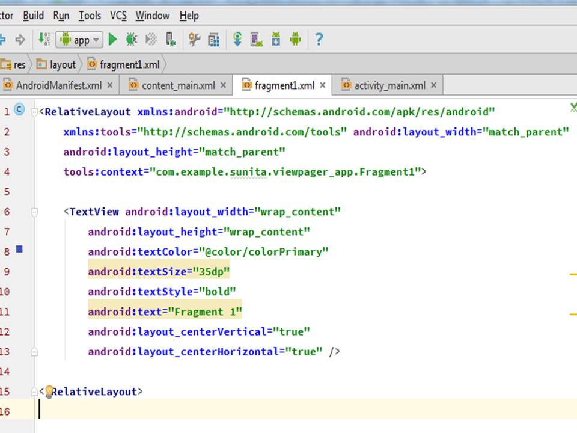
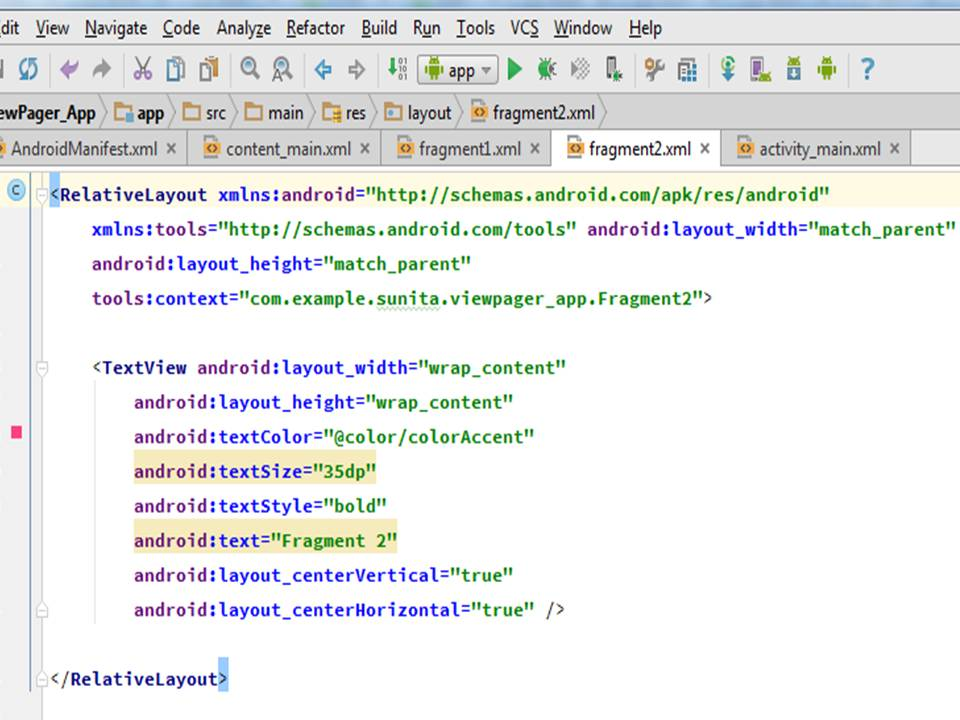

Viewpager is the best way to switching among view. It provide a way to swipe views from left to right and right to left. Viewpager provide strong way to swipe any views .
It does not support in lower android version so add the support library when you are using viewpager in your application.
ViewPagers source their views from PagerAdapters which give you have full control over the reuse and recycling of the views.
A Fragment represents a behavior or a portion of user interface in an Activity.
Multiple fragments can be combined in a single activity to build a multi-pane UI and a fragment can be reused in multiple activities.
A fragment is a modular section of an activity, which has its own lifecycle ,receives its own input events and which can be added or removed while the activity is running (sort of like a "sub activity" that you can reuse in different activities).
Application Description
Create an App to Show ViewPager & Fragments
Project Structure

Files Used:
1. AndroidManifest.xml

The manifest file has only two activities. One for taking user input and another for displaying the output.
2. activity_main.xml- Part1

activity_main.xml- Part2

3. fragment1.xml

4. fragment2.xml

5. MainActivity.java
In main activity create class ViewPagerAdapter & extends FragmentPagerAdapter. Then make an Array & add Fragments i.e. fragment1 & fragment2